Trouver un cours
La carte de tous les cours des enseignant·es adhérent·es, en salle et en ligne.
Ouvrir la carte : Trouver un cours

PratiquerCours hebdomadaires, sadhana à l’aube, cours du dimanche, ateliers et stages : choisissez votre porte d’entrée.
La carte de tous les cours des enseignant·es adhérent·es, en salle et en ligne.
Ouvrir la carte : Trouver un cours
Recherchez un·e enseignant·e par son nom ou son nom spirituel.
Rechercher : Trouver un enseignant
La pratique de l’aube, et des séances matinales gratuites en ligne.
Pratiquer à l’aube : Sadhana
Chaque dimanche de 9 h à 10 h 30, en ligne, en sangat.
Participer : Le cours de la FFKY
Bains de gong, ateliers, stages : les rendez-vous des adhérent·es.
Voir les ateliers : Ateliers et stages
Stages, ateliers, formations et festival dans un seul agenda.
Voir l’agenda : Calendrier